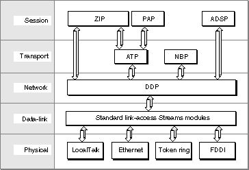

Using Providers
This section explains how you obtain and change a provider's mode of operation, it introduces theTNetBufstructure, which is universally used in Open Transport to transfer data, it provides more detailed discussion of asynchronous processing and the use of notifier functions, and it explains how you close a provider.In addition to the functions used to set a provider's mode of operation and to close a provider, general provider functions include the
OTIoctlfunction, which you can use to communicate directly with a Streams module implementing a networking protocol. For more information, see the description of the function in the reference section to this chapter.Controlling a Provider's Modes of Operation
A provider's mode of operation determines how provider functions execute and determines the behavior of provider functions that send and receive data. You can control a provider's mode of operation by calling general provider functions to specify whether provider functions execute synchronously or asynchronously, whether provider functions can block, and whether they can acknowledge sends. The following three sections provide additional information about how you can obtain a provider's current mode of operation and how you can change it.Specifying How Provider Functions Execute
For each provider, you can control whether provider functions run synchronously or asynchronously. When you open a provider, you set its default mode of execution. For example, when you open an endpoint provider, you can use either the functionOTOpenEndpointorOTAsyncOpenEndpoint. If you open an endpoint provider using theOTAsyncOpenEndpointfunction, Open Transport creates the provider and sets the default execution mode for all the provider's functions to asynchronous.A provider's default mode of execution remains in effect until you change it by calling either the
OTSetSynchronousfunction or theOTSetAsynchronousfunction. The new mode remains in effect until you change the mode again. A provider's mode of execution affects only that provider. If you use two or more providers, they need not operate in the same mode.In general, you should use providers in asynchronous mode. Although you can call all of a provider's functions synchronously, doing so generally results in a poor user experience because the user's system can do nothing else while a function is executing. This is especially likely to happen when heavy network traffic prevents a function that is sending or receiving data from completing. However, asynchronous processing does require some additional work: you must make sure that memory you have allocated for a function's output parameters is persistent and you must use some sort of mechanism to determine when the function has actually completed. These issues are taken up in the section "Using Notifier Functions to Handle Provider Events," beginning on page 2-12.
If you plan to call provider functions in synchronous mode, you should avoid doing so when you don't know how long it might take for a function to complete or when the function is being called from a function that executes at interrupt time.
The return behavior of certain provider functions is controlled not only by a provider's mode of execution but also by the provider's blocking status, described in the following section. Changing a provider's mode of execution does not change its blocking status.
Setting a Provider's Blocking Status
A newly created provider does not block, regardless of which Open Transport function created it. After a provider is created, you can change its blocking status as often as you like. A provider's blocking status affects only that provider.If a provider is nonblocking, provider functions that cannot complete send or receive operations return an error indicating why the operation could not complete. The result returned might be
- You use the
OTSetBlockingfunction to set a provider's mode of operation
to blocking.- You use the
OTSetNonBlockingfunction to set a provider's mode of operation to nonblocking.- You use the
OTIsNonBlockingfunction to determine whether a
provider blocks.In all these cases, you should call the function again.
kEAGAINErrorkEWOULDBLOCKErr, indicating that the function would have to be queued before it could executekOTNoDataErr, indicating that data has not yet arrivedkOTFlowErr, indicating that network traffic is too heavy to allow immediate executionSetting a Provider's Send-Acknowledgment Status
You can control the behavior of provider functions that send data by specifying that a provider acknowledge sends. For now, you can only specify that endpoint providers acknowledge sends.By default, providers do not acknowledge sends. This means that when you use a function that sends data, the provider copies the data into an internal buffer and then sends the data. Once the provider has copied the data into its own buffer, it releases the buffer you have allocated for the data. As soon as the function returns, you can change the contents of your buffer--even if the provider has not yet sent the data it copied.
If you use the
OTAckSendsfunction to specify that the endpoint provider acknowledge sends and you call a function that sends data, the endpoint provider does not copy data from your buffer before sending it. Instead it reads data directly from your buffer while sending. For this reason, you must not change the contents of your buffer until the endpoint provider is no longer using it. Sometimes, particularly if the endpoint is in blocking mode, a send operation can be delayed. The provider lets you know that it has finished using the buffer by calling your notifier function and passingT_MEMORYRELEASEDfor thecodeparameter, a pointer to the buffer that was sent in thecookieparameter, and the size of the buffer in theresultparameter.Only endpoint provider functions are affected by your calling the
OTAckSendsandOTDontAckSendsfunctions. For additional information, see the discussion of an endpoint's mode of operation in the chapter "Endpoints" in this book.Sending and Receiving Data
Most provider functions that transfer data pass a parameter of typeTNetbufthat specifies the size and location of user data. Such data is usually an address, option information, or actual data that you want to transfer. You can think of theTNetbufstructure as Open Transport's universal bucket, used to hold and pass on different kinds of information. Figure 2-1 shows how theTNetbufstructure refers to data in memory.Figure 2-1 The
TNetbufstructure
The structure is composed of three fields: the
buffield, thelenfield, and themaxlenfield. Thebuffield contains the beginning address of the data; thelenfield specifies the size of the data; and themaxlenfield specifies the maximum size the data could take up. How you use this structure depends on whether the structure specifies an input or output parameter:If you are using an endpoint provider, Open Transport also allows you to send noncontiguous data. If you need to do this, you use an
- If you are sending information (the structure is used to specify an input parameter), you must allocate a buffer and initialize it to contain the data you want to send. Then you must set the
buffield to point to the buffer and set thelenfield to specify the size of the data.- If you are receiving information (the structure is used to specify an output parameter), you must allocate a buffer into which the function can place the information when it returns. Then you must set the
buffield to point to the buffer and set themaxlenfield to specify the maximum size of the data that could be placed in the buffer. When the function returns, it sets thelenfield to the actual size of the data.OTDatastructure to specify the size and location of the data. For more information, see the chapter "Endpoints" in this book.If you want to do a no-copy receive (that is, to receive data without doing the usual extra buffer copying involved in receiving data), you use a special
OTBufferstructure that specifies the size and location of the data. For more information, see the chapter "Endpoints" in this book.Using Notifier Functions to Handle Provider Events
When provider functions execute asynchronously, you can continue processing without having to wait for a function to complete execution. In some cases, you might need to know when the function has finished executing, either because further processing depends on the results of that operation or because you need to use memory you have allocated for that function. In order to meet this need, the Open Transport architecture defines completion events, which are generated by a provider when an asynchronous function completes execution. To pass the event to your application as well as other information about the function that has completed, the provider calls a notifier function, that you have written and installed for that provider. The provider uses the notifier's parameters to pass the following information back to your application:If you open a provider in asynchronous mode, you install a notifier function by passing a pointer to it in one of the parameters to the function used to open the provider. If you open a provider in synchronous mode, you must call the
- an event code identifying the function that has completed
- the function result
- a pointer to additional information that the function is returning
This parameter is called the
cookieparameter. For example, when you call a function that assigns an address to an endpoint, you can request a particular address. When the function returns, it passes back the address that is actually assigned to the endpoint. If you call the function asynchronously, this information is referenced by thecookieparameter.- a context pointer for your use
You define this pointer when you install the notifier function. When the provider calls the notifier, it passes this pointer back to you.
OTInstallNotifierfunction to install the notifier. To remove a notifier, call theOTRemoveNotifierfunction. If you want to change notifiers, you must call theOTRemoveNotifierfunction to remove the old notifier, and then call theOTInstallNotifierfunction to install the new notifier.You are responsible for the contents of a notifier function. Typically, such a function tests to see whether the function that just completed has returned an error. If it has not, it uses a
switchstatement to transfer control to different subroutines, depending on the event code passed to the notifier. Listing 2-1 shows the skeleton of a notifier function used to handle events for an endpoint that is being used to accept connection requests. As you can see, the notifier does not need to handle every completion event, just those that you expect to happen and that have meaning for the provider you are opening. For a more detailed discussion of this code fragment, see the section describing connection-oriented endpoints in the chapter "Endpoints" in this book.You can use a notifier function to handle asynchronous events as well as completion events. A provider uses asynchronous events to inform your application that data has arrived or that a connection or disconnection request is pending. Endpoint providers have the option of using an endpoint provider function to poll for these events, but all other providers must use the notifier function to respond to asynchronous events. The method used is the same as for completion events. You must include case statements in the notifier that are pertinent to the asynchronous events you expect to receive.
Listing 2-1 A notifier function
pascal void MyConnectorEventHandler(EndpointRef *listenEP, OTEventCode event, OTResult result, void* cookie) { // set the global error result, only if result is negative if (result < 0) gOTErr = result; else gOTErr = kOTNoError; switch (event) { case T_OPENCOMPLETE: // set flag that the listener endpoint has // completed processing gAsyncProcessActive = false; if (result == kOTNoError) gListenConnectEP = (EndpointRef)cookie; break; case T_BINDCOMPLETE: break; case T_LISTEN: // don't expect to get a connect request on this endpoint break; case T_ACCEPTCOMPLETE: break; case T_ORDREL: case T_DISCONNECT: case T_DISCONNECTCOMPLETE: // decrement our use counter here gListenT_LISTENcnt--; break; case T_RESET: break; default: break; } }The provider calls your notifier function at deferred task time or at system task time. This means that the routines called from your notifierThe only exception to these rules occurs when you are responding to the event
- must be reentrant
- cannot move memory
- can't depend on validity of handles to unlocked blocks
- should not perform time-consuming tasks
- should not be synchronous
- cannot call Open Transport functions in synchronous mode
kOTProviderWillClose. See the event codes enumeration beginning on page 2-17 for additional information.If you execute provider functions asynchronously, you must also take special care about the duration of the function's variables. A function that is executed asynchronously returns immediately, and the stack frame of the function that called it might be torn down before you have had a chance to retrieve the information returned in the parameters to the asynchronous function (using the notifier function's
cookieparameter). If these parameters are local variables in the calling function, the information passed back by the asynchronous function is lost. To avoid this situation, you need to write the function that calls the asynchronous function in such a way that the memory pointed to by
its parameters is not overwritten. For example, you could make these
variables global.Transferring a Provider's Ownership
Open Transport keeps track of the owner of each provider, and when a client dies or quits without closing all of its outstanding providers, Open Transport attempts to close them on behalf of the client. Every shared library, code resource, or program that creates an endpoint, or uses one of the endpoint functions that allocate memory on behalf of the client, is a client of Open Transport. For ASLM shared libraries and applications, Open Transport can clean up after the library or application easily. For CFM shared libraries, however, the client must callCloseOpenTransportbefore terminating (this can be done by makingCloseOpenTransportthe termination procedure for the CFM library).Although it's not a frequent occurrence, there may be times when it is not convenient for you to lose access to a provider. For example, if you are still using a provider created by a shared library when that shared library is unloaded or you are still using a provider reference passed by another application when that application quits, you will find yourself using invalid references unexpectedly.
In cases where you do not want Open Transport to close a given provider, you can define yourself as its new owner with the OTTransferProviderOwnership function (page 2-24). You need to obtain the previous owner's client ID before the client terminates, and then pass it to Open Transport along with the provider reference for the provider. Open Transport allocates a new provider reference and returns the new reference to you. The old provider reference is then obsolete and should not be used.
Closing a Provider
There are two instances in which you need to close a provider:Closing a provider deletes all memory reserved for it in the system heap, deletes its resources, and cancels any provider functions that are currently executing. If the provider is in asynchronous mode, it is your responsibility
- when you are through using the services offered by a provider
You do this by calling the
OTCloseProviderfunction and passing the provider reference of the provider you wish to close.- in response to a
kOTProviderWillCloseevent
to make sure that all outstanding functions have completed before you close the provider.If you must close the provider in response to a
kOTProviderWillCloseevent, note that Open Transport issues this event only at system task time. This means that you can set the endpoint to synchronous mode (from within the notifier function) and call functions synchronously to do whatever clean up is necessary before you return from the notifier.